2 cách lọc bạn bè không tương tác trên Facebook cực NHANH

Ty Nguyen
CEO ❤️ AhaChat. Love babies & chatbot.
Mạng xã hội Facebook là nơi bạn có thể thoải mái kết bạn, giao lưu, trao đổi công việc, tương tác với nhau. Tuy nhiên, có rất nhiều tài khoản Facebook có đến hàng nghìn bạn bè, thậm chí là full giới hạn 5000 bạn bè nhưng lượng tương tác lại không nhiều. Vậy làm thế nào để lọc bạn bè không tương tác trên Facebook một cách nhanh nhất. Bài viết dưới đây sẽ giải đáp điều đó giúp bạn, đừng bỏ lỡ nhé!
1. Tại sao cần lọc bạn bè không tương tác trên Facebook
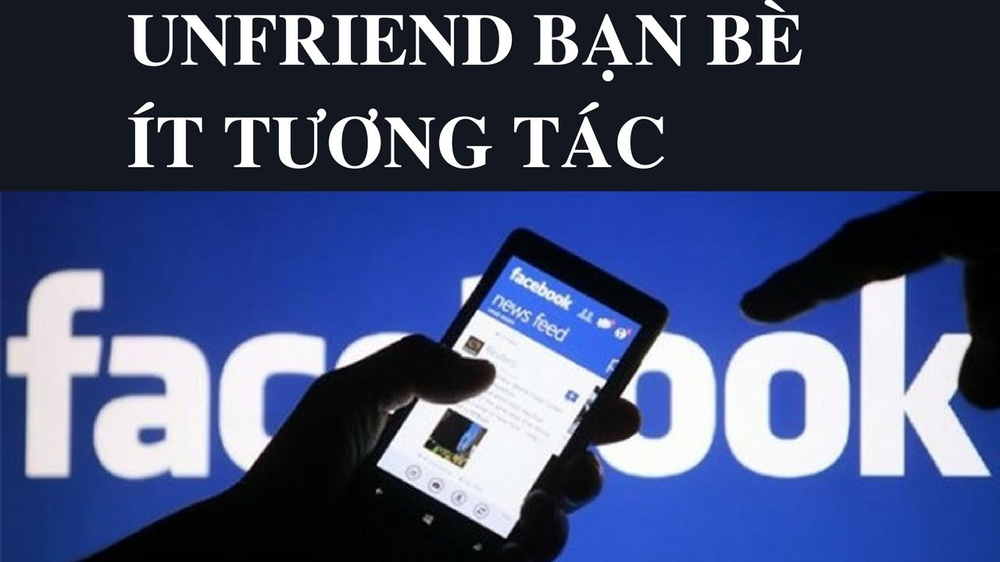
Khi bạn dùng tài khoản Facebook cá nhân để kinh doanh online, thời gian đầu bạn thường sẽ kết bạn với rất nhiều người để nhằm quảng bá được sản phẩm của bạn hoặc có thêm bạn bè để mời thích trang hoặc vào các nhóm group. Tuy nhiên, khi bạn kết bạn hàng loạt như vậy, mặc dù có nhiều bạn bè nhưng vẫn lẫn vào đó kha khá số bạn bè không hề có tương tác hoặc tương tác rất ít với tài khoản Facebook của bạn.
Bên cạnh đó, giới hạn bạn bè của mỗi tài khoản Facebook là 5000 bạn bè. Nếu đạt đủ ngưỡng này thì bạn sẽ không thể kết thêm bạn mới. Bởi vậy, nếu bạn không lọc những bạn bè không tương tác thì sẽ không còn khả năng kết bạn với những người mới khi đã đạt giới hạn.
Chính vì những lý do trên, việc lọc bạn bè không tương tác trên Facebook là điều hết sức cần thiết, đặc biệt là với những người có số lượng bạn bè sắp đạt ngưỡng giới hạn.
2. Mục đích của việc lọc bạn bè không tương tác hoặc ít tương tác trên Facebook
Mỗi lần lọc bạn bè không tương tác là mỗi lần nick Facebook của bạn được refresh
Lọc bạn bè không tương tác hoặc có tương tác với nick Facebook của bạn nhằm các mục đích sau:
- Xoá đi những bạn bè không tương tác, dành chỗ kết bạn cho những người bạn mới.
- Cải thiện lượng tương tác trên tài khoản của bạn
- Giúp công việc kinh doanh online, quảng bá sản phẩm được hiệu quả hơn
3. Cách lọc bạn bè không tương tác trên Facebook hiệu quả
Hiện tại, Facebook đã không còn chế độ hiện bạn bè ít tương tác với tài khoản Facebook của bạn. Chính vì vậy, việc lọc bạn bè không tương tác trên Facebook bằng các thủ công không còn thực hiện được nữa. Lúc này, bạn cần phải tìm đến các phần mềm tiện ích hỗ trợ bạn điều đó. Dưới đây là một số cách lọc bạn bè không tương tác trên Facebook miễn phí và mang lại hiệu quả cao
Cách 1: Lọc bạn bè không tương tác trên Facebook bằng phần mềm Fplus
Với phần mềm Fplus, cách lọc bạn bè không tương tác trên Facebook được thực hiện theo các bước sau:
Bước 1: Bạn truy cập vào website fplus24h.com, kéo xuống dưới nhìn phía bên trái màn hình sẽ có phần tải xuống như hình dưới
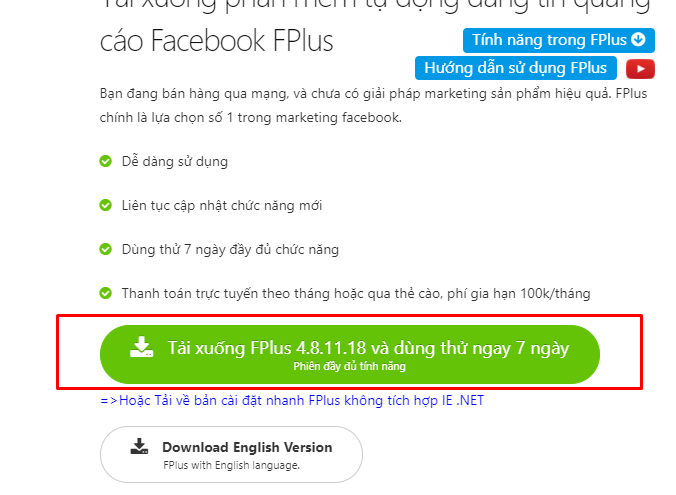
Bước 2: Sau khi đã tải xong phần mềm Fplus về máy tính, bạn tiến hành giải nén file vừa tải. Sau đó mở phần mềm Fplus lên rồi đăng nhập vào tài khoản Facebook cần lọc bạn bè không tương tác.
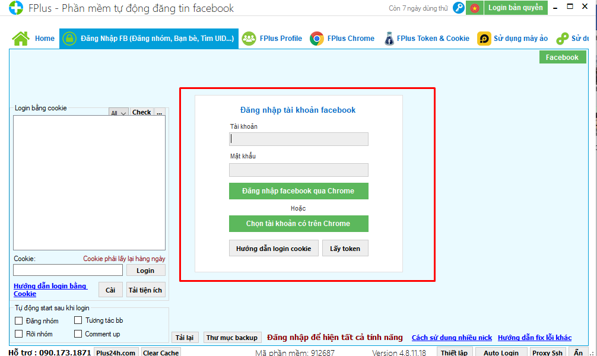
Bước 3: Sau khi đã đăng nhập vào tài khoản Facebook, tại thanh menu phía trên cùng màn hình, bạn bấm chọn vào mục Bạn bè, sau đó nhìn xuống phía dưới rồi click chuột vào mục Hủy kết bạn
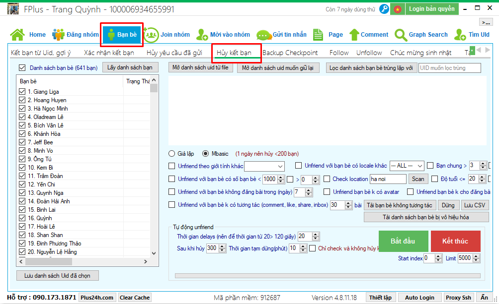
Bước 4: Tích chọn các thông số để bắt đầu quá trình lọc bạn bè không tương tác
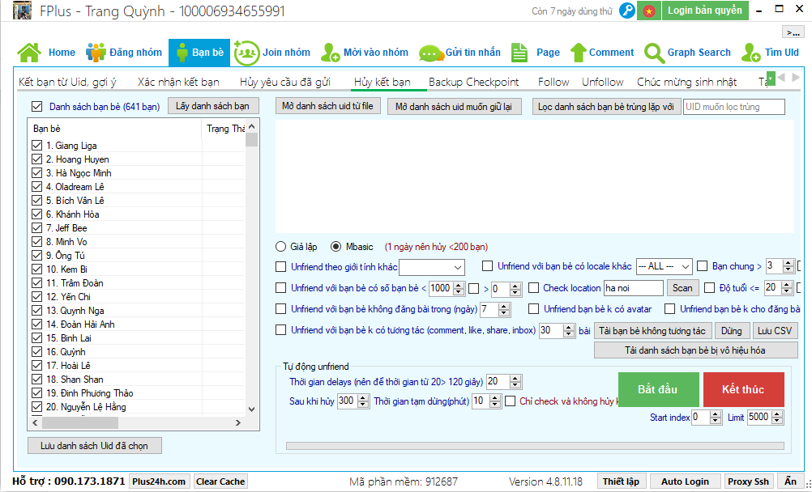
- Tích chọn vào ô Unfriend với bạn bè không có tương tác (comment, like, share, inbox)
- Tích Chỉ check và không hủy bạn bè để có thể kiểm tra danh sách trước khi huỷ nhằm tránh trường hợp huỷ quá nhiều so với nhu cầu.
- Tích chọn vào các điều kiện để kiểm tra bạn bè như hình dưới
- Thiết lập các thông số về thời gian tự động lọc bạn bè
- Và cuối cùng nhấn Bắt đầu để bắt đầu quá trình lọc bạn bè không tương tác
Như vậy là chỉ với những thao tác cơ bản, bạn đã có thể lọc được danh sách bạn bè không tương tác trên nick Facebook của mình rồi nhé
Cách 2: Lọc bạn bè không tương tác trên Facebook bằng tiện ích Multiple Tools for Facebook
Tiện ích Multiple Tools for Facebook là một tiện ích mở rộng của trình duyệt Chrome, tiện ích này giúp người dùng Facebook có nhiều trải nghiệm hữu ích, trong đó phải kể đến công cụ lọc bạn bè không tương tác. Các bước thực hiện cũng rất đơn giản:
Bước 1: Mở cửa hàng Chrome trực tuyến và tìm tiện ích Multiple Tools for Facebook, sau đó thêm vào trình duyệt Chrome
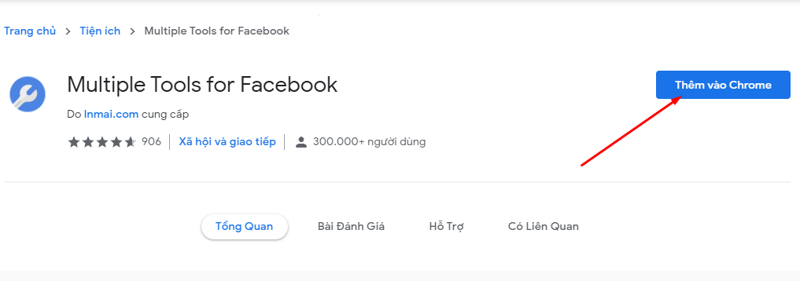
Bước 2: Sau khi thêm tiện ích thành công, bạn sẽ thấy biểu tượng hình cờ lê màu trắng nền xanh ở phía cuối thanh địa chỉ tìm kiếm
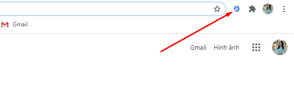
Bước 3: Đăng nhập tài khoản Facebook mà bạn muốn lọc bạn bè không tương tác trên trình duyệt Chrome vừa tải tiện ích Multiple Tools for Facebook. Sau đó click chuột vào biểu tượng cờ lê để mở tiện ích lên, sau đó tại menu bên trái bạn bấm chọn mục Tools
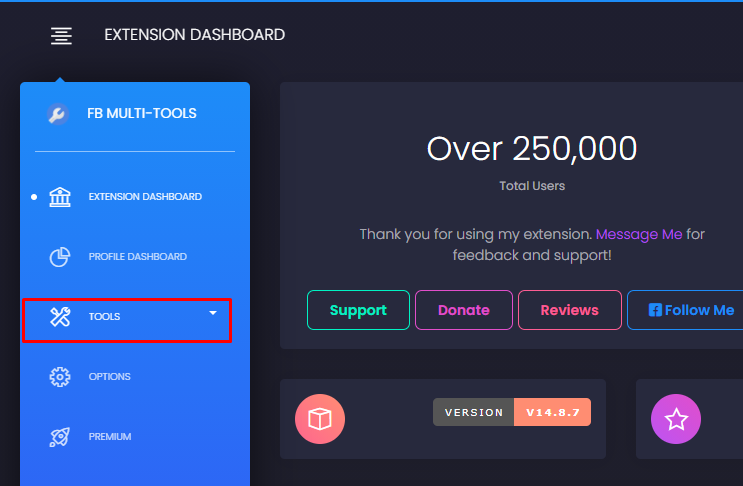
Kế tiếp đó, bấm vào mục Interaction Scanner
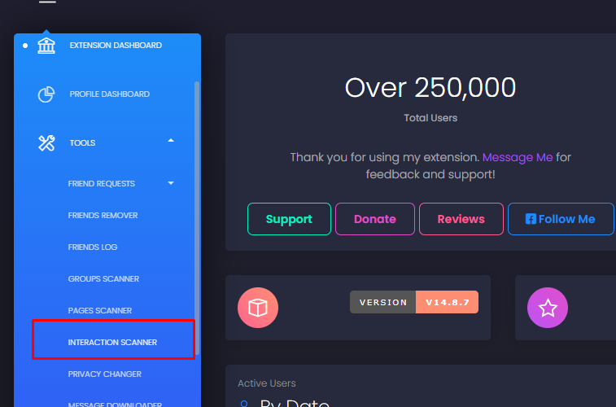
Bước 4: Sau khi bấm vào Interaction Scanner bạn chờ hệ thống tự động quét danh sách bạn bè không tương tác với bạn. Khi hệ thống quét xong bạn sẽ biết được những bạn bè ảo trên nick Facebook của bạn
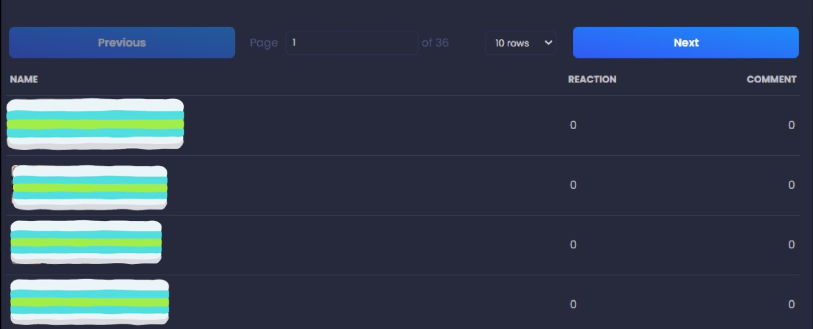
Bước 5: Tiếp theo đó, bạn nhìn sang menu bên phải và click chuột vào mục Friend Remove. Ngay lập tức, một danh sách bạn bè xuất hiện, bạn chỉ cần tích chọn vào những nick Facebook ít tương tác hoặc không tương tác với nick Facebook bạn đã được quét ở bước 4. Sau đó, bấm vào nút Bye Bye => Unfriend để xóa bạn bè
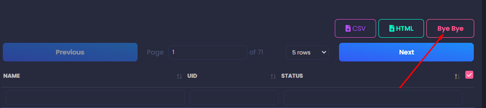
Với Multiple Tools for Facebook, chỉ với vài bước cơ bản là bạn đã lọc bạn bè không tương tác trên Facebook thành công rồi nhé.
Tuy nhiên, bạn cũng cần lưu ý rằng, bất kỳ một tiện ích công cụ nào cũng không đảm bảo được độ chính xác tuyệt đối 100%. Vì vậy trước khi xoá danh sách bạn bè không tương tác trên Facebook, bạn cần phải kiểm tra thật kỹ càng để tránh xóa nhầm bạn.
Hy vọng với những thông tin được chia sẻ trên đây đã giúp bạn biết được cách lọc bạn bè không tương tác trên Facebook. Trong quá trình thực hiện, nếu có bất kỳ thắc mắc gì hãy để bình luận ở mục dưới đây để chúng tôi hỗ trợ và giải đáp cho bạn trong thời gian sớm nhất. Mong rằng bài viết giúp ích cho bạn, chúc bạn thực hiện thành công!